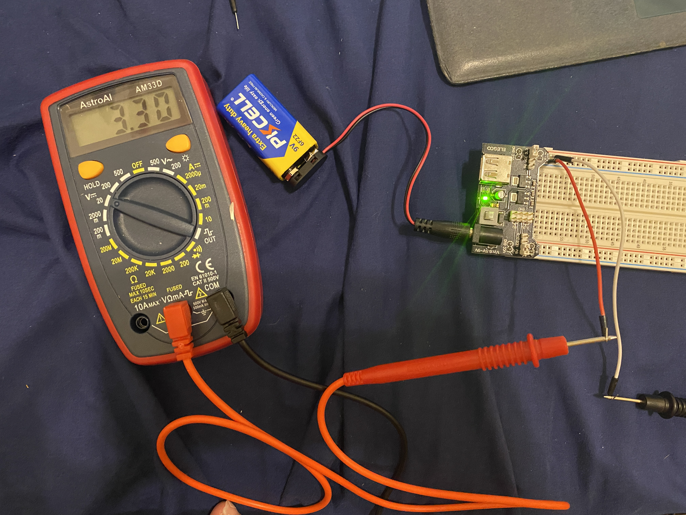
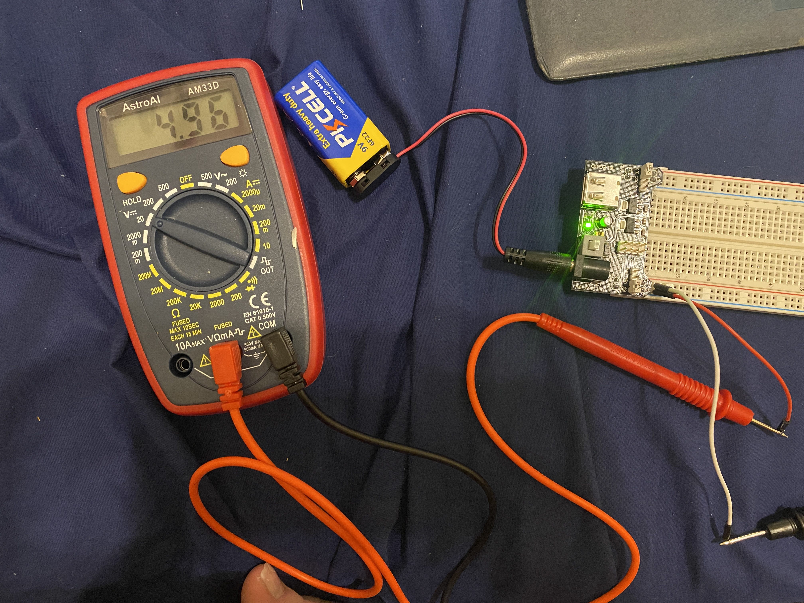

Lab 1 introduces electronics and simple circuits. It explores how current flows through components and how to control the path of electricity. In this lab, I built circuits with LEDs to turn them on/off and to control their brightness.
First, I connected the Power Supply Module, which is capable of converting the 9V batter to both 5V and 3.3V, to the breadboard. I did it such that the '+' and '-' symbols on both sides of the module matched the '+' (red) and '-' (blue) markings on the breadboard. Then, I connected the 9V battery to the barrel jack Connector on the power module. I pressed the white ON/OFF button on the module to ensure that the power was working. I knew this because the green LED on the power module turned on when power was being supplied. The correct set up is pictured below.

Next, I connected two jumper wires and connected one end of each to a pin on the blue/red power lines on the breadboard. I used the multimeter to probe the two jumper wires to test the voltage on either side to ensure one side was reading around 3.3V, and the other side was reading around 5V. My measurments are pictured below. I would like to note that the instructions say to turn the multimeter knob to '20' on the Volts side, but I was instructed in recitation to turn it to '500' on the Volts side.  
This portion of the lab required calculating the amount of resistance required to properly set up a circuit with a LED. A resistor is required to control the current flowing through the LED, so that it doesn't 'blow up' from too much current. The calculation for the amount of resistance required can be performed using Ohm's Law: V = IR. The LEDs I used for this lab had a max current rating of 40 mA, so a current of about 20 mA t0 35 mA was appropriate for safely running the LED. Below is the calculation provided for determining the resistance requried when powering the LED with a 3.3V source.
V = I * R
R = V / R
R = 3.3V / 30 mA = 110 Ohms
Because there I did not have a 110 Ohm reistor, I set up the circuit using a 100 Ohm resistor. Below is a schematic of the circuit and a picture of the physical circuit I created.